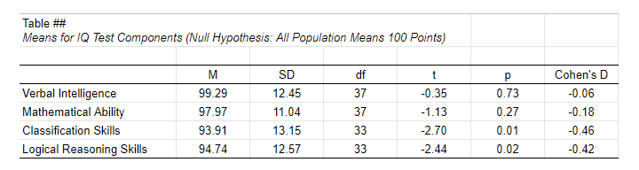

单样本 T 检验 - 快速教程与示例
作者：Ruben Geert van den Berg 在 Statistics A-Z & T-Tests 下发布
- 零假设 (Null Hypothesis)
- 假设 (Assumptions)
- 公式 (Formulas)
- 效应量 (Effect Size)
- 均值的置信区间 (Confidence Intervals for Means)
- APA 格式报告 (APA Style Reporting)
单样本 T 检验 (One-Sample T-Test) 评估一个总体均值是否可能为 x：某个假设值。
单样本 T 检验示例
一位学校校长认为他的学生由于智商 (IQ) 分数低而表现不佳。现在，大多数智商测试都经过校准，在一般人群中的平均值为 100 分。所以问题是：学生群体的平均智商分数是否为 100？现在，我们的学校有 1,114 名学生，并且智商测试的管理成本有些高。因此，我们的校长抽取了一个 N = 38 名学生的简单随机样本，并测试了他们的 4 个智商组成部分：
- verb (Verbal Intelligence, 语言智力)
- math (Mathematical Ability, 数学能力)
- clas (Classification Skills, 分类技能)
- logi (Logical Reasoning Skills, 逻辑推理技能)
因此收集的原始数据位于 此 Google 表格 中，部分内容如下所示。请注意，由于疾病和未知原因，缺少几个分数。
零假设 (Null Hypothesis)
我们将尝试通过拒绝零假设来证明我们的学生智商分数较低，即对于测量的 4 个智商组成部分的每一个，整个学生群体的平均智商分数为 100。我们面临的主要挑战是，我们只有来自 N = 1,114 的人口的 38 名学生的样本数据。但让我们首先看一下每个组成部分的一些描述性统计信息：
- N - 样本大小 (sample size)
- M - 样本均值 (sample mean)
- SD - 样本标准差 (sample standard deviation)
描述性统计 (Descriptive Statistics)
我们的第一个基本结论是，我们的 38 名学生在所有 4 个智商组成部分的得分都低于 100 分。verb (99.29) 和 math (97.97) 的差异很小。clas (93.91) 和 logi (94.74) 的差异似乎更为严重。
现在，我们的 38 名学生的样本显然可能会得出与我们的 N = 1,114 的总体略有不同的均值。那么，关于我们的人口，我们能（不能）得出什么结论？我们将尝试使用 2 种不同的方法将这些样本结果推广到我们的人口：
- 统计显著性 (Statistical significance)：如果总体均值实际上都是 100 分，那么这些样本均值有多大可能性？
- 置信区间 (Confidence intervals)：给定样本结果，总体均值的可能范围是什么？
这两种方法都需要一些假设，因此让我们首先研究这些假设。
假设 (Assumptions)
我们的单样本 t 检验所需的假设是：
- 独立观察 (independent observations)：每个学生的测试结果互不影响。
- 正态性 (normality)：智商分数在整个人群中必须是 正态分布 (normally distributed)。
我们的数据是否符合这些假设？首先，
1. 我们的学生在测试期间没有互动。因此，我们的观察结果很可能是独立的。
2. 只有在小样本量（例如 N < 25 左右）时才需要正态性。对于手头的数据，正态性不是问题。对于较小的样本量，您可以通过以下方式评估正态性假设：
- 检查直方图 (histograms) 是否大致遵循正态曲线，
- 检查 偏度 (skewness) 和 峰度 (kurtosis) 是否都接近 0，以及
- 运行 Shapiro-Wilk 检验 (Shapiro-Wilk test) 或 Kolmogorov-Smirnov 检验 (Kolmogorov-Smirnov test)。
但是，手头的数据满足所有假设，因此现在让我们研究实际的测试。
公式 (Formulas)
如果我们抽取 许多 学生的样本，这样的样本将得出不同的均值。我们可以计算假设样本中这些均值的标准差：均值的标准误差或 \(SE_{mean}\)
\[SE_{mean} = \frac{SD}{\sqrt{N}}\]
对于我们的第一个智商组成部分，这导致
\[SE_{mean} = \frac{12.45}{\sqrt{38}} = 2.02\]
我们的零假设是总体均值 \(_0 = 100\)。如果这是真的，那么平均样本均值也应该为 100。我们现在基本上计算样本均值的 z 分数：检验统计量 \(t\)
\[t = \frac{M - \mu_0}{SE_{mean}}\]
对于我们的第一个智商组成部分，这导致
\[t = \frac{99.29 - 100}{2.02} = -0.35\]
如果满足假设，\(t\) 遵循 t 分布，自由度或 \(df\) 由下式给出
\[df = N - 1\]
对于 38 名受访者的样本，这导致
\[df = 38 - 1 = 37\]
给定 \(t\) 和 \(df\)，我们可以简单地在 此 Google 表格 中查找双尾显著性水平 \(p\) = 0.73，部分内容如下所示。
解释 (Interpretation)
根据经验法则，如果 p < 0.05，我们拒绝零假设。我们刚刚发现 p = 0.73，因此我们不拒绝我们的零假设：给定我们的样本数据，总体均值为 100 是一个可信的陈述。
那么，p = 0.73 究竟意味着什么？好吧，这意味着 t < -0.35 或 t > 0.35 的概率为 0.73（或 73%）。下图说明了此概率如何从 抽样分布 (sampling distribution) t(37) 得出。
接下来，请记住 t 只是一个标准化的平均差异。对于我们的数据，t = -0.35 对应于 -0.71 智商点的差异。因此，p = 0.73 意味着找到至少 0.71 点的绝对平均差异的概率为 0.73。粗略地说，如果我们，发现的样本均值很可能发生 在零假设为真的情况下。
效应量 (Effect Size)
单样本 t 检验的唯一 效应量测量 (effect size measure) 是 Cohen’s D，定义为
\[Cohen's\;D = \frac{M - \mu_0}{SD}\]
对于我们的第一个智商测试组成部分，这导致
\[Cohen's\;D = \frac{99.29 - 100}{12.45} = -0.06\]
一些一般约定是：
- Cohen’s D | = 0.20 表示 小 效应量；
- Cohen’s D | = 0.50 表示 中等 效应量；
- Cohen’s D | = 0.80 表示 大 效应量。
这意味着对于我们的第一个测试组成部分，Cohen’s D = -0.06 表示可忽略不计的效应量。SPSS 中完全没有 Cohen’s D，除了 SPSS 27。JASP 可以轻松获得它。下面的 JASP 输出显示了所有 4 个智商测试组成部分的效应量。
请注意，最后 2 个智商组成部分 -clas 和 logi- 几乎具有中等效应量。这些也是均值与 100 显着不同的 2 个组成部分：两个均值的 p < 0.05（第三个表格列）。
均值的置信区间 (Confidence Intervals for Means)
我们的数据得出了我们 4 个智商测试组成部分的样本均值。现在，我们知道样本均值通常与其总体对应值略有不同。那么，我们想要的总体均值的可能范围是什么？这通常通过计算 95% 置信区间 (confidence intervals) 来回答。我们将演示最后一个智商组成部分（逻辑推理）的过程。
由于我们有 34 个观察值，因此 t 遵循自由度 df = 33 的 t 分布。我们将首先查找哪些 t 值从逆 t 分布中包含了最可能的 95%。我们将通过在 Google 表格 的任何单元格中键入 =T.INV(0.025,33) 来执行此操作，该表格返回 -2.03。请注意，0.025 为 2.5%。这是因为 5% 的最不可能值分布在分布的两端，如下图所示。
现在，我们的 t 值 -2.03 估计我们的 95% 的样本均值在 ± 2.03 个标准误差之间波动，由 \(SE_{mean}\) 表示。对于我们的最后一个智商组成部分，
\[SE_{mean} = \frac{12.57}{\sqrt34} = 2.16 \]
我们现在知道，我们的 95% 的样本均值估计在 ± 2.03 · 2.16 = 4.39 个智商测试点之间波动。最后，我们将此波动与我们观察到的 94.74 的样本均值相结合：
\[CI_{95\%} = [94.74 - 4.39,94.74 + 4.39] = [90.35,99.12]\]
请注意，我们的 95% 置信区间不包含我们假设的 100 的总体均值。这意味着我们将在 α = 0.05 时拒绝此零假设。我们甚至不需要运行实际的 t 检验来得出此结论。
APA 格式报告 (APA Style Reporting)
单个 t 检验通常在文本中报告，如“语言技能的平均值与 100 没有差异，t(37) = -0.35, p = 0.73, Cohen’s D = 0.06。”对于多个测试，建议使用如下所示的简单概述表。我们认为还应包括均值的置信区间（不是均值差异）。由于 APA 没有提及这些，我们暂时将它们排除在外。
 单样本 T 检验的 APA 格式报告表示例